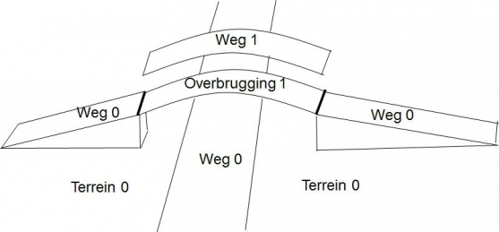
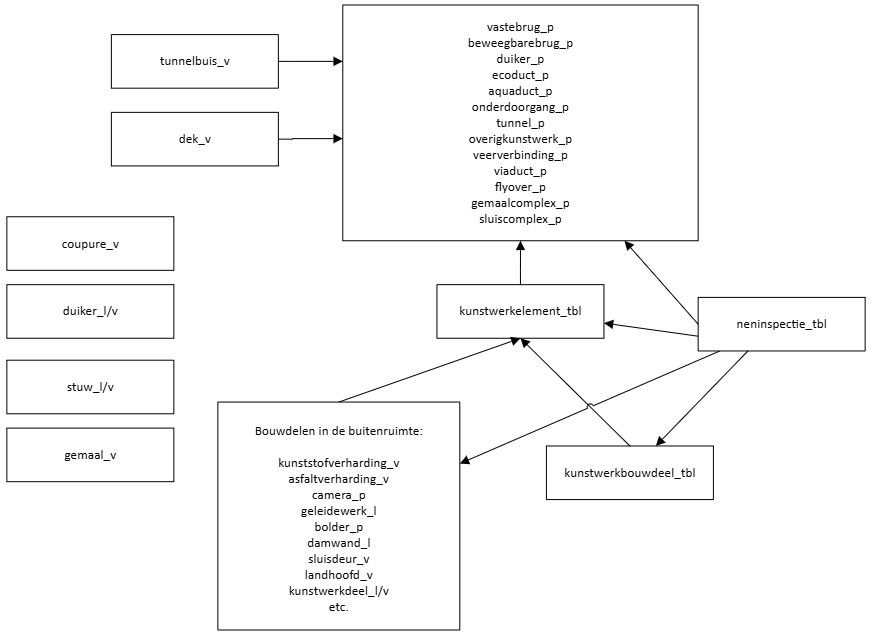
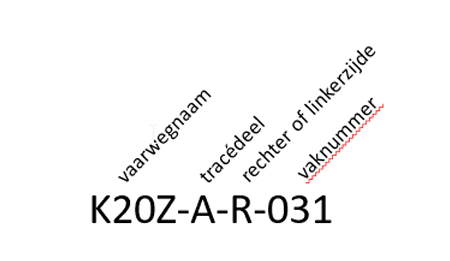
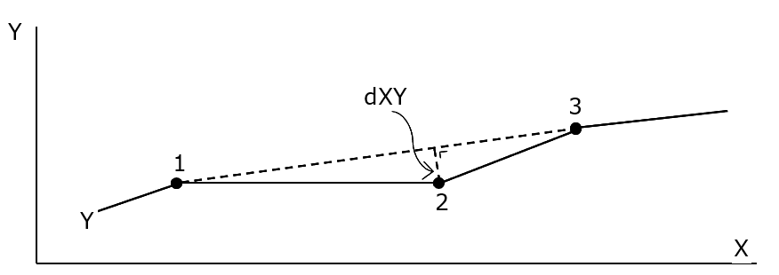
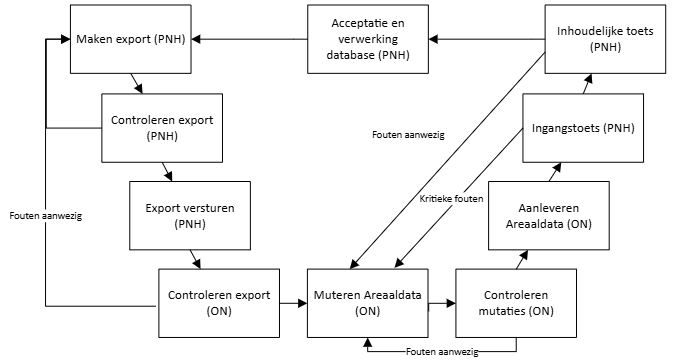

Productspecificatie Areaaldata 5.0
grootschalige topografie en areaalinformatie Provincie Noord-Holland
Revisie overzicht
4.0 | Sep 2016 | Major versie update vanwege verandering naar Areaaldata |
4.3 | Mei 2021 | Algehele opwaardering datamodel, waaronder aansluiting op NEN2767-4, 1.5. |
5.0d1 | 2026 | Conversie van BGT/IMGEO naar IMBOR als kern voor het datamodel |
Inleiding
Deze productspecificatie beschrijft de eisen en richtlijnen voor het opstellen en aanleveren van revisiebestanden voor Areaaldata. Areaaldata is voor de Provincie Noord‑Holland de centrale dataset voor het vastleggen en beheren van (geografische) assetgegevens. Daarnaast vormt Areaaldata de basis voor gegevensuitwisseling met landelijke registraties, waaronder de Basisregistratie Grootschalige Topografie (BGT) en het Kabels en Leidingen Informatie Centrum (KLIC). De huidige versie van Areaaldata is versie 5.0, met als releasedatum [nog in te vullen].
Dit document is opgesteld om dataleveranciers te informeren over de opbouw van Areaaldata en over de eisen die worden gesteld aan het uitvoeren van dataleveringen conform Areaaldata. Het document biedt daarmee inzicht in de structuur en inhoud van het product Areaaldata.
Objecttypebibliotheek (OTL) Areaaldata
De Provincie Noord‑Holland heeft ten behoeve van Areaaldata een Objecttypebibliotheek (Object Type Library, OTL) vastgesteld. De OTL bevat een gedetailleerde beschrijving van de objecttypen en attributen die binnen Areaaldata zijn gemodelleerd. De OTL vormt daarmee een integraal onderdeel van deze productspecificatie.
De productspecificatie vormt samen met de OTL‑Areaaldata de Informatie‑leveringsspecificatie Areaaldata (ILS‑Areaaldata). De ILS‑Areaaldata is leidend voor de wijze waarop revisiebestanden moeten worden opgebouwd en aangeleverd. De OTL wordt ontsloten via een online omgeving en is daarnaast beschikbaar als document. In de online omgeving wordt de OTL via meerdere weergaven gepresenteerd, gericht op verschillende gebruikersgroepen. De volledige weergave van de OTL is normatief.
Indien de productspecificatie en de OTL‑Areaaldata onderling afwijken, moet hierover contact worden opgenomen met de opdrachtgever om vast te stellen hoe hiermee wordt omgegaan.
Revisieleveringen binnen Areaaldata
In Areaaldata wordt het bestaande areaal van de Provincie Noord‑Holland vastgelegd. Onder areaal wordt verstaan: het geheel aan provinciale assets en objecten in de fysieke leefomgeving waarvoor de provincie verantwoordelijk is. Werkzaamheden leiden altijd tot aanpassing van de bestaande situatie; de ingewonnen gegevens beschrijven uitsluitend bestaande assets. Dataleveringen worden daarom verwerkt als een uitsnede (export) van de bestaande Areaaldatabase.
De opdrachtgever (projectteam) van de werkzaamheden is het aanspreekpunt voor het uitvoeren van een datalevering. De opdrachtgever stemt hierbij intern af met de dataspecialisten van provincie die de opdrachtgever ondersteunen bij het uitvoeren van revisieleveringen.
Een revisielevering moet bestaan uit een bijgewerkte export van Areaaldata en een kwaliteitsrapportage. In deze kwaliteitsrapportage moet worden beschreven welke werkzaamheden zijn uitgevoerd en op welke wijze wordt voldaan aan de eisen zoals vastgelegd in deze productspecificatie.
Doorontwikkeling en wijzigingsbeheer
De informatiebehoefte van de Provincie Noord‑Holland is continu in ontwikkeling. Dit geldt ook voor de omgeving waarin gegevens worden uitgewisseld. Om aan nieuwe en gewijzigde behoeften te blijven voldoen, worden zowel deze productspecificatie als de OTL‑Areaaldata doorontwikkeld. Daarbij wordt geanticipeerd op ontwikkelingen in (landelijke) standaarden, informatiemodellen, registraties en systemen waarmee Areaaldata gegevens uitwisselt. Dit zijn onder meer IMBOR (Informatiemodel Beheer Openbare Ruimte), de Basisregistratie Grootschalige Topografie (BGT), IMGeo (Informatiemodel Geografie) en IMKL (Informatiemodel Kabels en Leidingen).
Ten behoeve van de doorontwikkeling van de ILS‑Areaaldata worden wijzigingen in het datamodel ingedeeld in drie categorieën:
Categorie 1 – Wijzigingen met grote impact
Wijzigingen met een grote impact op de aanlevering van Areaaldata. Deze wijzigingen hebben een aanzienlijke invloed op software en/of op de inwinning en registratie van objecten in de Areaaldatabase. Zij vereisen een grote inspanning, bijvoorbeeld door het aanpassen van software of door een fundamenteel andere of aanvullende registratie van objecten. Voorbeelden zijn het introduceren van nieuwe objecttypen of definitiewijzigingen die leiden tot een wezenlijk andere inwinning of registratie van bestaande objecten.
Categorie 2 – Wijzigingen met beperkte impact
Wijzigingen met een beperkte impact op de aanlevering van Areaaldata. Deze wijzigingen hebben een beperkte invloed op de inwinning en registratie van objecten. Voorbeelden zijn het verduidelijken of actualiseren van definities van objecttypen en attributen, het uitbreiden van keuzelijsten, het toevoegen van eenvoudige attributen of het toevoegen van attributen voor intern gebruik.
Categorie 3 – Correcties (bugs)
Een bug is een fout of onvolkomenheid in de productspecificatie, de OTL‑Areaaldata of de ILS‑Areaaldata die leidt tot onduidelijkheid, onjuistheid of een technisch onwerkbare situatie. Bugs moeten zo snel mogelijk worden hersteld en hoeven niet te wachten op een nieuwe release. Voorbeelden zijn spelfouten, incorrecte koppelingen en tegenstrijdigheden tussen documenten.
De versienummering van Areaaldata is opgebouwd volgens het schema x.ydz. Bij grote structurele wijzigingen wordt het eerste cijfer (x) verhoogd. Wijzigingen van categorie 1 leiden tot een verhoging van het middelste cijfer (y). Wijzigingen van categorie 2 leiden tot een verhoging van het laatste cijfer (z). De huidige versie van Areaaldata is versie 5.0d1. De meest recente grote structurele wijziging, van versie 4 naar versie 5, betreft de overgang van IMGeo naar IMBOR als basis voor het datamodel.
Gerelateerde standaarden
Areaaldata is gebaseerd op en sluit aan bij relevante landelijke standaarden en informatiemodellen. In tabel 1 zijn de standaarden opgenomen die van toepassing zijn op deze productspecificatie en de OTL‑Areaaldata.
Tabel 1 – Overzicht gerelateerde standaarden
Nr. | Naam | Versie | Bron |
1 | Informatiemodel openbare ruimte (IMBOR) | 2022 | CROW |
2 | Informatiemodel openbare ruimte (IMBOR) | 2025 | CROW |
3 | Informatiemodel Kabels en Leidingen (IMKL) | 3.0 | |
4 | Informatiemodel Geografie (IMGeo) | 2.2 | |
5 | NEN 2767-4-2 | 1.5 | NEN |
6 | Basisregistratie Grootschalige Topografie (BGT) | 1.2 | |
7 | Beheer Informatie Standaarden Openbaar Vervoer Nederland - Fysieke haltestructuur en toegankelijkheid | 8.4.2.0 | DOVA |
Productomschrijving Areaaldata
Areaaldata
Areaaldata is een objectgericht geografisch model dat de openbare ruimte van provinciale wegen en vaarwegen beschrijft. Het model is ingericht om meerdere gebruiksdoelen te ondersteunen. Het hoofddoel van Areaaldata is assetmanagement, maar het is tevens ontworpen om te voldoen aan wettelijke taken en om landelijke (basis)registraties te actualiseren.
Vanaf Areaaldata versie 5.0 is Areaaldata gebaseerd op IMBOR 2022. IMBOR staat voor Informatiemodel Beheer Openbare Ruimte en is een landelijke standaard van CROW voor het uniform en eenduidig vastleggen van gegevens over objecten in de openbare ruimte. De objecten in Areaaldata zijn geclassificeerd volgens de objecttypen zoals opgenomen in IMBOR 2022. In enkele gevallen zijn afwijkende objecttypen toegepast om te voorzien in specifieke informatiebehoeften van de Provincie Noord‑Holland die niet binnen IMBOR 2022 passen. Waar van toepassing zijn de objecttypen gekoppeld aan de BGT, IMGeo, IMKL en NEN 2767‑4‑2.
In het informatiemodel worden objecten per objecttype vastgelegd als geometrische punt‑, lijn‑ of vlakobjecten, of als tabel. De geografische representatie van objecten sluit zoveel mogelijk aan op de vereisten van de BGT en IMGeo. Indien BGT of IMGeo dit voorschrijven, worden objecttypen opgesplitst in verschillende klassen. Zo worden bijvoorbeeld muren smaller dan 30 centimeter als lijnobject vastgelegd en muren breder dan 30 centimeter als vlakobject.
Elk objecttype kent een set eigenschappen (attributen) die wordt vastgelegd om te voorzien in de informatiebehoeften van de provincie. De attributen en bijbehorende definities zijn zoveel mogelijk gebaseerd op IMBOR 2022 en, waar nodig, aangevuld met definities uit andere relevante standaarden.
Bij afwijkingen zijn de definities in de productspecificatie en de OTL‑Areaaldata leidend ten opzichte van gerelateerde informatiemodellen.
Klassetype
Binnen Areaaldata wordt onderscheid gemaakt tussen tabel‑, punt‑, lijn‑ en vlakobjecten. Het klassetype en de geometrie van een object zijn afhankelijk van het objecttype en, waar van toepassing, de fysieke afmetingen. Tabellen worden gebruikt voor functionele registratie of voor het vastleggen van gegevens van onderdelen van objecten met een geometrische representatie.
De volgende geometrische objecttypen worden onderscheiden:
- Puntobjecten, zoals palen, verkeersborden en bomen.
- Lijnobjecten, zoals geluidschermen, hekken en voedingskabels.
- Vlakobjecten, zoals asfaltverharding, vaste bruggen en gebouwen.
In de database en de OTL‑Areaaldata zijn tabellen en geometrische objecten herkenbaar aan de volgende suffixen: _tbl, _p, _l en _v.
Objecten worden niet vastgelegd als multipunt‑, multilijn‑ of multivlakobjecten. Een uitzondering hierop vormen multipuntobjecten die conform de BGT zijn toegestaan, zoals een hoogspanningsmast.
Gebogen lijnvormen worden vastgelegd als gestrookte bogen (rechtstanden). Het gebruik van cirkels of booggeometrieën is niet toegestaan. Gebogen lijnvormen worden vastgelegd als gestrookte bogen (rechtstanden). Voor Areaaldata geldt een resolutie van 0,0001 meter en een tolerantie van 0,001 meter.
Topologie en relatieve hoogteligging
De objecten moeten voldoen aan de topologische regels zoals gesteld in de Basisregistratie Grootschalige Topografie (BGT). De vlakobjecten op maaiveldniveau (niveau 0) partitioneren de ruimte. Dit betekent dat deze objecten:
- topologisch correct gestructureerd moeten zijn.
- naadloos op elkaar moeten aansluiten, zodat op maaiveldniveau geen gaten voorkomen.
- elkaar niet mogen overlappen.
Op maaiveldniveau moet het gebied volledig vlakdekkend zijn. Het totale oppervlak van alle objecten op maaiveldniveau moet gelijk zijn aan het dekkingsgebied. Voor revisieleveringen is het dekkingsgebied de volledige uitsnede. Indien een object op maaiveldniveau wordt verwijderd, moet het vrijgekomen gebied worden opgevuld met een ander object. Niet alle vlakobjecten zijn opdelend. Objecten zoals een schuur (gebouw_v) of haag_v worden overlappend met andere vlakken gemodelleerd op dezelfde relatieve hoogteligging. De opdelende vlakobjecten worden onderscheiden doordat deze in de feature dataset ‘Vlakdekkend’ zijn opgenomen.
Voor het bepalen van de relatieve hoogteligging en de afbakening van overbrugging en ondertunneling moeten de inwinningsregels van de BGT worden gehanteerd. Om de relatieve hoogteligging van objecten ten opzichte van elkaar vast te leggen, worden niveaus toegekend. Het maaiveld is hierbij gedefinieerd als niveau 0.
Het niveau van een object geeft niet de absolute hoogte van het object weer en geeft niet de hoogte ten opzichte van het maaiveld in meters aan. Het niveau geeft uitsluitend de onderlinge, relatieve positie van objecten weer. Het attribuut‘relatieve hoogteligging’moet voor elk object het bijbehorende niveau bevatten.
Open, bovengronds water heeft altijd niveau 0. Objecten op een bovenliggend niveau, zoals een overbrugging over water, moeten een hoger niveaugetal hebben. Objecten op een onderliggend niveau, zoals een tunnel, moeten een lager niveaugetal hebben. Water in duikers wordt niet gemodelleerd.
Bij bruggen en tunnels/onderdoorgangen Voor het modelleren van niveauverschillen bij bruggen en tunnels of onderdoorgangen worden vlakobjecten vastgelegd in dek_v en tunnelbuis_v. Deze vlakken moeten volledig dekkend worden overlapt door opdelende vlakobjecten, zoals verhardingsvlakken of scheidingen.
Naast vlakobjecten kennen ook bepaalde punt‑ en lijnobjecten het attribuut ‘relatieve hoogteligging’. Dit attribuut moet worden gevuld met het niveau waartoe het object behoort. In de meeste gevallen is dit het niveau waarop het object zich bevindt. Een uithouder die boven het maaiveld hangt, behoort tot het maaiveld en heeft niveau 0. Tunnelverlichting behoort tot de tunnel en heeft hetzelfde niveau als tunnelbuis_v.
Voor vlak- en lijnobjecten geldt dat deze op één niveau worden geregistreerd. Dit betekent bijvoorbeeld dat een weg zich opsplitst in meerdere verhardingsvlakken met eigen identificaties als deze over een brug loopt, ook al zijn de rest van de kenmerken gelijk.
Bij het toekennen van niveaus moet rekening worden gehouden met de volgende regels:
- Aan een object mogen uitsluitend gehele getallen worden toegekend als niveauwaarde (bijvoorbeeld 1, 0, 2). Het gebruik van halve of fractionele niveaus (zoals 1,5) is niet toegestaan.
- Niveau 0 representeert de situatie op het maaiveld.
- Niveaus moeten elkaar zoveel mogelijk opeenvolgend volgen. Niveau 1 en niveau 1 representeren objecten die zich direct boven respectievelijk onder het maaiveld bevinden, zoals een brug, viaduct of tunnel (zie afbeelding 2).
- Het kan voorkomen dat niveauwaarden niet opeenvolgend zijn en dat waarden worden overgeslagen (bijvoorbeeld 2, 0, 1, 3). Dit is toegestaan wanneer sprake is van meerdere kruisende constructies op één locatie, zoals een viaduct boven een brug.
Voor informatie hierover zie:
Basisregistratie Grootschalige Topografie Gegegevenscatalogus BGT 1.2

Figuur 1. Voorbeeld niveauindeling BGT. De overbrugging hoort in Areaaldata onder dek_v geregistreerd te worden
Unieke identificatiecode
Binnen Areaaldata vormt het attribuut ad_id de unieke identificatie van elk object. Deze identificatie blijft aan een object gekoppeld zolang het object bestaat. Het ad_id moet worden opgebouwd uit de prefix ‘ad.’, gevolgd door een UID. Deze UID bestaat uit 32 hexadecimale tekens, waarbij letters als hoofdletters zijn weergegeven. Voor het genereren van de UID moet een GUID/UUID‑generator worden gebruikt. Een voorbeeld van een geldig ad_id is: AD.233C2952516E4557B9322FE23FD50263
Het is niet toegestaan om een ad_id handmatig te genereren of te wijzigen, bijvoorbeeld door één of meerdere tekens aan te passen.
Objecttypen en metadata
Het informatiemodel van Areaaldata is opgebouwd uit objecttypen. Deze objecttypen zijn vastgelegd in de objecttypebibliotheek (OTL). Elk objecttype is voorzien van definities en metadata die beschrijven wat het objecttype inhoudt en op welke wijze het objecttype wordt geregistreerd en uitgewisseld.
Per objecttype worden de volgende metadata vastgelegd:
- Areaaldata model versie: Versie van Areaaldata.
- Assetgroep: Indeling van objecttypen in groepen ten behoeve van het ordenen van objecttypen binnen de OTL. Deze indeling is organisatie‑specifiek en uitsluitend bedoeld voor structurering binnen de objecttypebibliotheek. De assetgroep heeft geen invloed op de definitie van het objecttype en geen invloed op de scope van een datalevering.
- Feature dataset: Indeling van objecttypen in groepen ten behoeve van het ordenen van objecttypen binnen de database. Deze indeling is organisatie‑specifiek en voornamelijk bedoeld voor structurering binnen de database. De feature dataset heeft geen invloed op de scope van een datalevering.
- Herkomst definitie: Aanduiding van de oorsprong van de definitie van het objecttype. Dit betreft bijvoorbeeld een definitie afkomstig uit IMBOR 2022. Definities die reeds in Areaaldata aanwezig waren en ongewijzigd zijn overgenomen, hebben de aanduiding PNH.
- Herkomst URI: Indien de definitie afkomstig is uit een extern informatiemodel, is de bijbehorende URI opgenomen.
- Positionele nauwkeurigheid: Vastlegging van de beoogde positionele nauwkeurigheid voor het inmeten van het objecttype. Nadere instructies hiervoor zijn opgenomen in paragraaf 3.3 van deze productspecificatie.
- Geometrie: Aanduiding van de wijze waarop het objecttype geometrisch wordt vastgelegd. Objecten zonder geometrische representatie zijn als tabel opgenomen. Sommige objecttypen kennen, afhankelijk van de BGT‑regels, meerdere mogelijke geometrische vormen.
- Definitie: Beschrijving van de inhoudelijke betekenis van het objecttype.
- MappingBGT: Vastlegging van de relatie met een BGT‑ of IMGeo‑objecttype. Deze relatie beschrijft dat de geometrische representatie van het objecttype aansluit op de regels die voor het gerelateerde BGT‑ of IMGeo‑objecttype gelden. Indien van toepassing zijn de instructies in de OTL en deze productspecificatie leidend.
- Muteren toegestaan: Aanduiding welk type dataleverancier bevoegd is om dit objecttype te leveren of te muteren.
- Heeft Z-waarden: Aanduiding of het objecttype technisch is ingericht voor het gebruik van Z-waarden. Z-waarden zijn technisch toegestaan indien dit veld is ingesteld op ENABLED, maar worden op dit moment nog niet opgenomen. Areaaldata wordt momenteel tweedimensionaal toegepast; objecten hebben in de praktijk een Z-waarde van 0. Bij bestaande objecten kan hiervan worden afgeweken. Deze bestaande Z-waarden mogen niet worden gewijzigd.
- Heeft M-waarden: Heeft M‑waarden. Aanduiding of het objecttype technisch is ingericht voor het gebruik van M‑waarden. M‑waarden worden op dit moment zeer beperkt binnen Areaaldata toegepast. De M-waarden zijn niet ingericht voor gebruik door derden en leveranciers dienen hier geen mutaties op door te voeren.
Attribuut informatie
Van objecten wordt naast het ad_id een uitgebreide set aan attributen vastgelegd. Deze attributen zijn per objecttype inzichtelijk in de objecttypebibliotheek (OTL). Naast het attribuut zelf is per attribuut aanvullende metadata vastgelegd. Dit betreft:
- Alias: Alternatieve naam van het attribuut voor presentatie en leesbaarheid die wordt weergegeven in applicaties en viewers. De alias wijzigt de technische veldnaam en de betekenis van het attribuut niet.
- Datatype: Aanduiding van de registratievorm van het attribuut.
- Oorsprong: Aanduiding of het attribuut, inclusief bijbehorende definities en keuzelijsten, is gebaseerd op IMBOR of voortkomt uit eerdere versies van Areaaldata (PNH).
- Superklasse: Aanduiding, van toepassing op IMBOR‑attributen, welk objecttype binnen de IMBOR‑taxonomie de oorsprong vormt van het attribuut. Deze aanduiding ondersteunt uitwisseling met andere informatiemodellen.
- Attribuuttype: Onderverdeling die beschrijft op welke wijze het attribuut wordt gevuld. De volgende typen komen voor:
- Waarde wordt automatisch bepaald: Systeemattributen die automatisch door het systeem worden gevuld en niet handmatig worden aangepast.
- UID: Unieke identificatie, zoals het ad_id.
- Ja/Nee: Attribuut met een binaire keuze tussen ja en nee.
- Vrij invoerveld: Attribuut dat vrij kan worden ingevuld binnen het vastgelegde datatype.
- Enumeratie: Attribuut met een vooraf vastgestelde keuzelijst van toegestane waarden.
- Enumeratie/Referentie: Verwijzing naar de bijbehorende keuzelijst.
- Verwijzende sleutel (Foreign Key): Aanduiding van attributen die verwijzen naar andere objecten. De verwijzende sleutel betreft altijd een ad_id. Voor statische objecten, zoals wegen of vaarwegen, kan deze relatie ook zijn ingericht als Enumeratie/Referentie.
- Standaardwaarde: Vooraf ingevulde waarde die vanuit systeemdoeleinden is ingesteld. Sommige attributen worden bij het aanmaken van een nieuw object, binnen ESRI‑applicaties, vanuit de geodatabase voorzien van een standaardwaarde op basis van de meest logische invulling. De waarde moet veranderd worden wanneer de waarde onjuist is.
- Nullable: Aanduiding of een attribuut leeg kan zijn in de opgebouwde geodatabase. De volgende opties komen voor:
- NON_NULLABLE: geeft aan dat het veld niet leeg kan zijn.
- NULLABLE: geeft aan dat het veld leeg kan zijn. Voor NULLABLE attributen geldt dat vastlegging wordt verwacht wanneer de waarde beschikbaar is; ingevulde waarden worden opgeslagen in de database.
- Definitie: Inhoudelijke beschrijving van het attribuut.
- Leveren door [invullen]: Aanduiding of en door welk type dataleverancier het attribuut wordt aangeleverd. Deze aanduiding biedt inzicht in de verdeling van verantwoordelijkheden tussen dataleveranciers en de Provincie. Sommige attributen worden door de Provincie zelf ingevuld. Hierbij wordt onderscheid gemaakt tussen een aantal veelvoorkomende typen dataleveranciers. Per dataleverancier worden afspraken gemaakt; hiervan kan worden afgeweken.
Decompositie en andere relaties
Decompositie is het vastleggen van een object als samenstelling van meerdere onderling gerelateerde objecten. Dit maakt het mogelijk om onderdelen afzonderlijk te registreren en te relateren, terwijl de samenhang met het geheel behouden blijft. Binnen Areaaldata wordt decompositie toegepast om objecten overzichtelijk te ordenen en efficiënt te registreren in functionele objectstructuren. De relaties tussen objecten worden vastgelegd met behulp van verwijzende sleutels (foreign keys).
Niet alle relaties zijn altijd gevuld, omdat een object niet gelijktijdig onderdeel hoeft te zijn van alle mogelijke structuren. Een voorbeeld is het objecttype verkeersbord_p, dat afhankelijk van de situatie wordt gekoppeld aan een paal_p of een portaal_l
In de volgende paragrafen worden kenmerkende decompositiestructuren beschreven.
Algemeen
Het objecttype beheergebied_v beschrijft de gebiedsindeling van objecten ten behoeve van beheer en onderhoud. De meeste objecten hebben een directe relatie met een beheergebied_v.
Daarnaast worden de meeste objecten gekoppeld aan het weg‑ of vaarwegtraject waarvan zij onderdeel uitmaken, via weg_v of vaarweg_v. Objecten op land die zijn gelegen tussen een provinciale weg en een provinciale vaarweg worden geregistreerd onder weg_v. Een uitzondering hierop vormen objecten die functioneel tot het systeem van de vaarweg behoren, zoals vaarwegverkeersborden en aanmeervoorzieningen.
Objecten die deel uitmaken van een kruising tussen een weg en een vaarweg, zoals bruggen, worden gekoppeld aan zowel weg_v als vaarweg_v.
Wegen
Wegen zijn ten behoeve van de CROW Wegbeheersystematiek (CROW-147) opgedeeld in wegvakken (wegvak_v). Deze wegvakken verdelen de weg in delen van circa 100 meter en sluiten aan op de weghectometrering. Deze wordt vastgelegd afhankelijk van het type verharding, zoals asfalt, beton of elementenverharding. Indien aangrenzende wegdelen binnen één wegvak dezelfde BGT‑functie, hetzelfde fysiek voorkomen en dezelfde rijbaanaanduiding hebben, worden deze samengevoegd. In dat geval worden de attributen van het langste wegdeel overgenomen Een uitzondering hierop vormt de verharding op bruggen. Deze wordt afzonderlijk opgeknipt om koppeling aan de brug mogelijk te maken. De verharding op een kunstwerk wordt beschouwd als bouwdeel en gekoppeld aan het kunstwerk.
Wegmarkeringen worden niet geometrisch vastgelegd. Inspecties en metingen worden geregistreerd in afzonderlijke tabellen.
Kunstwerken
Kenmerkend voor het kunstwerkbeheer is dat het bestaat uit een verzameling objecten die samen een functioneel geheel vormen en ruimtelijk aan elkaar zijn gebonden. Bij complexe kunstwerken wordt een onderverdeling aangebracht in de vorm van een decompositie. De decompositie van kunstwerken volgt zoveel mogelijk de NEN 2767‑4‑2 (versie 1.5). Deze norm onderscheidt drie niveaus: beheerobject (bijvoorbeeld een vaste brug), element (bijvoorbeeld hoofddraagconstructie) en bouwdeel (bijvoorbeeld rijdek). Op bouwdeelniveau wordt een koppeling gelegd naar een element, dat op zijn beurt is gekoppeld aan het kunstwerk. Het kunstwerk zelf wordt gemodelleerd als functioneel (punt)object (ecoduct_p, duiker_p, sluiscomplex_p, viaduct_p etc.), gelegen binnen de fysieke begrenzing van het kunstwerk. Kunstwerken worden geïdentificeerd met een topcode (objectnummer) die door de provincie wordt uitgegeven.
Binnen Areaaldata worden alle bouwdelen die in de buitenruimte zichtbaar zijn vastgelegd in de daarvoor ingerichte objecttypen. Vanuit deze objecttypen wordt een relatie gelegd met kunstwerkelement_tbl. Bouwdelen die niet of niet direct zichtbaar zijn, worden geregistreerd in het objecttype kunstwerkbouwdeel_tbl.
Om te voldoen aan de vereisten van de BGT worden brugdekken en tunnelbuizen geregistreerd en afgedekt met vlakobjecten, zoals asfaltverharding_v. Deze vlakobjecten worden als bouwdeel via een element, bijvoorbeeld Verharding type 3, gekoppeld aan de vaste brug.
Eenvoudige kunstwerken en kunstwerken die niet door de provincie (gedeeltelijk) beheerd worden, worden niet vastgelegd met een decompositie.
Een aandachtspunt binnen kunstwerken vormen duikers. Afhankelijk van de diameter worden duikers geregistreerd als lijn‑ of als vlakobject; bij een diameter kleiner dan dertig centimeter als lijnobject en bij een diameter groter dan dertig centimeter als vlakobject. Grote duikers en duikerbruggen worden vastgelegd als duiker_p, inclusief een decompositie.

Oevers
Oevers langs vaarwegen worden vastgelegd volgens een decompositie die is afgeleid van de NEN 2767‑4. Het objecttype oeverzone_v vervult hierbij het niveau beheerobject. Een oeverzone beschrijft de rand van een kanaal of vaarweg en modelleert oevers met een gelijke opbouw.
Indien een oeverzone langer is dan 100 meter, wordt deze opgeknipt in één of meer zones van 100 meter en een eventuele restzone. Deze opdeling is vereist om een uniforme objectindeling te waarborgen.
De oeverzone wordt geregistreerd als een vlakobject dat een indicatie geeft van de ligging van de oeverzone. Bij oeverzones die bestaan uit damwand‑ of kadeconstructies wordt dit vlak opgebouwd uit de hartlijn van de constructie, met een buffer van 1 meter rondom. Indien geen sprake is van een dergelijke constructie, volgt de oeverzone de lengterichting van de vaarweg en wordt deze gemodelleerd op basis van een fictieve lijn waaruit het vlak met buffer wordt opgebouwd. De objectnaam van oeverzones is als volgt opgebouwd:

Bij het opknippen van oeverzones worden kleine letters of volgnummers gebruikt om de afzonderlijke zones te onderscheiden, zodat elke objectnaam uniek is. In sommige gevallen bestaat de identificatie van een oeverzone niet uit vaknummers, maar is het laatste deel van de naam gebaseerd op de vaarweghectometrering. De naamgeving en eventuele toevoegingen bij het opknippen zijn vereist om consistent te zijn met de naamgeving van andere oeverzones binnen dezelfde vaarweg.
Oeverzones kunnen uit meerdere elementen bestaan, die worden geregistreerd in het objecttype oeverelement_tbl. Voorbeeld van een element is kerende constructie. Niet geometrische bouwdelen worden vastgelegd in oeverbouwdeel_tbl met een relatie naar oeverelement_tbl. Een voorbeeld van een niet-geometrisch bouwdeel is verankering.
Sommige oeverzones zijn vastgelegd als natuurvriendelijke oever of als oeverzone met plasberm. Vlakobjecten die functioneel en fysiek deel uitmaken van de oever moeten worden gekoppeld aan de betreffende oeverzone.
Vlakken die geen onderdeel vormen van de oever, moeten niet aan de oeverzone worden gekoppeld. Een grasachtige dijk die zich achter een oeverconstructie bevindt, wordt bijvoorbeeld niet beschouwd als onderdeel van de oeverzone. De volgende objecttypen zijn voorbeelden van vlakobjecten die wel aan een oeverzone worden gekoppeld:
- Rietland
- Plasberm
- Oeverbescherming
- Deksloof
Deze objecten vormen daarmee een bouwdeel binnen de oeverzone decompositie, waarbijde oeverzone de functionele samenhang beschrijft en het bouwdeel de fysieke uitvoering vastlegt.
VRI, Openbare Verlichting en Hemelwaterafvoer
Netwerken met ondergrondse componenten moeten worden vastgelegd via een overkoepelende registratie in utiliteitsnet_tbl. Binnen deze registratie worden de volgende netwerktypen onderscheiden:
- Verkeersregelinstallatie (VRI)
- Openbare verlichting (OVL)
- Hemelwaterafvoer
Alle objecten die functioneel tot één netwerk behoren, moeten via een relatie aan het betreffende utiliteitsnet worden gekoppeld. Op basis van deze relatie moet eenduidig herleidbaar zijn welke objecten onderling bij elkaar horen.
Voor bepaalde netwerkcomponenten kunnen daarnaast onderlinge objectrelaties worden geregistreerd, indien dit noodzakelijk is voor het correct beschrijven van de functionele of technische samenhang. In deze paragraaf worden per netwerktype de toegestane en vereiste relaties beschreven.
Kabels kennen in het algemeen meerdere relaties. Kabelobjecten moeten minimaal als volgt worden geregistreerd:
- De kabel is gekoppeld aan de kast van waaruit deze wordt gevoed.
- Het beginpunt en het eindpunt van de kabel moet afzonderlijk worden vastgelegd. Het begin‑ en eindpunt van kabels worden geregistreerd conform de aansluittekeningen. Dit betekent dat de relatie wordt vastgelegd van een bronobject (bijvoorbeeld kast met kastnummer xx) naar een doelobject, zoals: een lichtmast, een lantaarn, een drukknop of een detector. Het begin‑ en eindpunt van een kabel loopt altijd van de bron (meestal een kast) naar het aangesloten object en bestaat uit één lijnstuk.
Veel componenten zijn aangebracht op palen of portalen. In portaal_l registreren we liggers van portalen en in paal_l de ondersteunende palen. Enkelzijdige liggers leggen we vast in zweepmast_l. Van alle componenten die op een paal of op een ligger zijn gemonteerd wordt de relatie tussen deze twee objecten geregistreerd. De objectcodes van de componenten moeten overeenkomen met de codes die op de as-built-/revisietekeningen staan.
Openbare verlichting (OVL)
Een OVL‑systeem van aan elkaar verbonden groep lichtbronnen, armaturen, actievemarkeringen, lichtmasten, kasten en andere ondersteunende objecten, is herleidbaar via het utiliteitsnet. Het utiliteitsnet verwijst naar de bijbehorende OVL‑kast in utiliteitsnet_tbl. De OVL‑kast is als puntobject geregistreerd in ovl_kast_p, waarbij het midden van de kast als XY‑coördinaat wordt gebruikt. Vanuit de OVL‑kast loopt één elektriciteitskabel (voedingskabel_l) naar de lichtmasten. De voedingskabel is vervolgens opgedeeld van kast naar lichtmast 1; van lichtmast 1 naar lichtmast 2; enzovoorts. Een lichtmast bevat een armatuur en elke armatuur bevat slechts één lichtbron (lamp).
Verkeersregelinstallaties (VRI)
We registreren een utiliteitsnet voor elk kruispunt dat getypeerd is als een ‘geregeld kruispunt’. Het utiliteitsnet krijgt de objectcode overeenkomstig met de Topdesk-code welke door provincie Noord-Holland wordt vrijgegeven en overeenkomt met de bestickering op de VRI-kast. De VRI kast wordt geregistreerd als puntobject in de featureclass vri_kast_p. Het midden van de kast wordt hierbij als XY-coördinaat gebruikt. Vanuit de VRI‑kast loopt per aangesloten VRI‑beheerobject één voedingskabel.
Elk beheerobject dat onafhankelijk bestuurd kan worden binnen het VRI‑systeem, moet een eigen kabel hebben die rechtstreeks op de kast is aangesloten. De kabel kan lopen:
- van kast naar detectielus (detector_l).
- van kast naar VRI‑lantaarn (verkeerslantaarn_p).
- van kast naar drukknop (drukknop_p).
Als meerdere beheerobjecten op dezelfde XY‑coördinaat zijn geplaatst (bijvoorbeeld een drukknop en een verkeerslantaarn), zijn afzonderlijke voedingskabels noodzakelijk. De kabeldikte moet ook overeenkomen met het aangesloten beheerobject.
Als een VRI‑object is gemonteerd aan een portaal of uitlegger, loopt de voedingskabel tot de paal waar deze kabel doorheen loopt en niet tot het object zelf.
Hemelwaterafvoer
Ten behoeve van de hemelwaterafvoer van wegen wordt een utiliteitsnet met het kenmerk riolering uit de keuzelijst UtiliteitsnetType. Het utiliteitsnet wordt geregistreerd per hoofdroute. Deze omvat alle kolken, leidingen en putten langs de weg die bijdragen aan het afvoeren van hemelwater.
Drainagesystemen achter de oeverzone ter bescherming van de oeverconstructie worden opgenomen binnen de oeverzone decompositie en zijn niet apart opgenomen in het utiliteitsnet.
Overige systemen
Naast VRI, OVL en Hemelwaterafvoer kent de provincie ook systemen ten behoeve van gladheidsmelding, telpunten en losstaande camera’s. Deze registreren we niet onder een utiliteitsnet. Componenten van beweegbare kunstwerken en tunnels worden niet gekoppeld aan een apart utiliteitsnet. Hierbij is het onderlinge systeem van objecten zoals camera, kast en kabel inzichtelijk via de kunstwerkdecompositie.
OV-Haltes
Areaaldata is ingericht om informatie uit te kunnen wisselen met het Centraal Haltebestand (CHB). Waar dit van toepassing is zijn objectnamen en codes overgenomen uit het CHB. Een haltecluster (StopPlace) wordt in Areaaldata vastgelegd in het objecttype halteplaats_v. Dit functionele vlak omvat alle perrons en andere aan de halte gerelateerde objecten. Een aantal objecttypen, waaronder abri en fietsparkeervoorziening, worden waar mogelijk gerelateerd aan de haltevoorziening. Perron_v worden specifieke haltes (Quay) geregistreerd. Dit functionele vlak omvat alle objecten van deze halte.
Geluidwerende voorzieningen
Het objecttype geluidwerendeconstructie wordt gebruikt voor de registratie van alle geluidwerende objecten. Hieronder vallen onder andere geluidwallen, diffractoren en geluidschermen. De constructie wordt ingetekend op de locatie waar deze wordt opgenomen in de geluidmodellen. Geluidwerende constructies worden geïdentificeerd met een topcode (objectnummer) die door de provincie wordt uitgegeven.
Indien de geluidwerende constructie bestaat uit een geluidscherm, wordt de constructie uitgewerkt volgens een decompositie conform NEN 2767-4. Het objecttype geluidwerendeconstructie representeert hierbij het beheerobject. Het geluidscherm wordt op elementniveau vastgelegd als geluidscherm_l. De geometrie wordt opgesplitst op locaties waar kenmerken wijzigen, zoals hoogte of materialisatie, en daarnaast per 100 meter. Onder het geluidscherm worden geen bouwdelen geregistreerd.
Overige elementen, zoals talud (bijvoorbeeld wanneer een scherm op een wal staat) en vluchtweginstallatie, worden vastgelegd in kunstwerkelement_tbl. De bijbehorende bouwdelen worden geregistreerd in kunstwerkbouwdeel_tbl.Faunavoorzieningen
Fauna‑gerelateerde objecten, die gezamenlijk onderdeel vormen van één integrale faunavoorziening, moeten via een relatie aan het functionele vlakobject gebied_faunavoorziening_v worden gekoppeld.
- Ecoducten hebben als kunstwerk een decompositie. Het ecoduct zelf wordt aan gebied_faunavoorziening_v gekoppeld. Onderdelen op het ecoduct behoren tot de kunstwerkdecompositie.
- Rasters die de primaire functie hebben om fauna te weren/geleiden worden onder faunameubilair_l geregistreerd.
- Geleidewanden welke onderdeel uitmaken van een raster worden als losse faunameubilair_l geregistreerd.
- Faunavoorzieningen breder dan dertig centimeter worden als faunavoorziening_v vastgelegd.
Producteisen Areaaldata
Het op te leveren revisiebestand moet voldoen aan de onderstaande kwaliteitseisen. Deze eisen hebben onder andere betrekking op:
De data kan op verschillende manieren worden ingewonnen. Deze productspecificatie beschrijft uitsluitend de eisen waaraan het eindproduct moet voldoen en schrijft geen specifieke inwinmethode voor. Objecten die binnen het werk nieuw zijn gerealiseerd of die zijn verplaatst of gewijzigd, dienen conform deze kwaliteitseisen te worden ingemeten en vastgelegd in het revisiebestand.
Bestandsformaat
Revisiebestanden voor Areaaldata worden aangeleverd in het ESRI File Geodatabase-formaat (.fgdb). Voor het ESRI File Geodatabase‑formaat gelden de volgende voorschriften:
- De ESRI File Geodatabase moet bruikbaar zijn in ArcGIS Pro 3.5.4.
- De bestandsopbouw, waaronder attribuutnamen en definities, mag niet worden gewijzigd of aangevuld zonder voorafgaand overleg met de opdrachtgever.
- Relationship classes die op het moment van ontvangst onderdeel uitmaken van de File Geodatabase, worden ongewijzigd meegeleverd in het revisiebestand.
- Er is een XML document beschikbaar op de Provincie GIT webpagina die geïmporteerd kan worden in een File Geodatabase wat direct het juiste schema toepast.
Verwerken van wijzigingen
Wijzigingen worden op objectniveau vastgelegd in het attribuut verwerkingsstatus. Voor dit attribuut worden de volgende vijf statussen onderscheiden: actueel, nieuw, aangetroffen, gewijzigd en vervallen.
Alle objecten in de uitsnede hebben initieel de status actueel. Deze status blijft behouden tenzij het object wordt gewijzigd of vervallen.
Een object krijgt de status nieuw indien:
- het object volledig is vervangen, bijvoorbeeld een bord.
- het object nieuw is geplaatst.
- het object is ontstaan door splitsing van een ander object.
Een object krijgt de status aangetroffen indien:
- het object niet voorkomt in het aangeleverde bestand, maar buiten wel aanwezig en zichtbaar is. Een aangetroffen object valt buiten de scope van de mutaties die een dataleverancier normaal gesproken levert. Voorbeeld: een verkeersbord is geplaatst op een bestaande bordpaal die niet in de dataset is opgenomen. In dat geval wordt de bordpaal als aangetroffen aangeleverd.
- het niet is toegestaan om alle buiten aanwezige objecten als aangetroffen aan te leveren. In een gebied kunnen meerdere partijen gelijktijdig werken; deze beperking voorkomt dubbele registratie van objecten.
Een object krijgt de status gewijzigd indien:
- de geometrie van een object is aangepast en/of.
- een attribuut van een object is aangepast.
- de tekenvolgorde of kenmerken van vertexen zijn aangepast.
Een object krijgt de status vervallen indien:
- het object buiten niet meer aanwezig is, maar nog wel voorkomt in het aangeleverde revisiebestand.
Het attribuut ad_id van een object blijft gelijk aan het ad_id van het aangeleverde object. Uitsluitend voor nieuwe en aangetroffen objecten wordt een nieuw ad_id aangemaakt. Wanneer een object van het ene objecttype naar een ander objecttype wordt overgezet, wordt altijd een nieuw ad_id aangemaakt, ongeacht de verwerkingsstatus.
Aandachtspunten bij het gebruik van verwerkingsstatus van objecten:
- Het vervangen van de deklaag van wegdelen leidt tot een wijziging van bestaande objecten. In dit geval worden geen nieuwe objecten toegevoegd.
- Objecten die buiten zijn verwijderd of niet langer aanwezig zijn, krijgen de status vervallen. Deze objecten worden niet uit de dataset verwijderd, maar krijgen een waarde voor het attribuut objecteindtijd.
- Het is niet toegestaan om bestaande objecten als nieuw of aangetroffen aan te maken wanneer aannemelijk is dat het ingemeten object overeenkomt met een bestaand object in de dataset. In dat geval wordt het bestaande object gewijzigd. Het aanleveren van een nieuw of aangetroffen object in combinatie met het op vervallen zetten van het bestaande object is niet toegestaan.
- Vlakobjecten die het maaiveld ten behoeve van de BGT representeren, worden zoveel mogelijk niet op vervallen gezet. Voorbeeld: bij een wegverbreding wordt het ondersteunend wegdeel (berm) smaller. Dit leidt tot een wijziging van het bestaande object en niet tot het vervallen ervan. Wanneer in dezelfde situatie nieuwe groenstenen worden geplaatst, worden deze als nieuw object vastgelegd. Het bestaande ondersteunende wegdeel blijft daarbij bestaan als een gewijzigd en verkleind object.
Nauwkeurigheid
Areaaldata dient te voldoen aan de volgende eisen:
- Bij aansluitingen tussen objecten hebben vertices (detailpunten) die in beide objecten voorkomen identieke X- en Y-coördinaten, rekening houdend met de in paragraaf 2.2 beschreven resolutie en tolerantie. Deze eis geldt ook voor de aansluiting van nieuw ingemeten objecten op bestaande Areaaldata.
- De data wordt opgeleverd in het Rijksdriehoekstelsel (RD New; EPSG:28992).
Voor de ingewonnen vertices gelden de onderstaande nauwkeurigheidseisen. Daarbij wordt een indeling gehanteerd in vier nauwkeurigheidsklassen:
Klasse | Positionele nauwkeurigheid (absoluut t.o.v. RD) |
Harde topografie (H) | σx,y < 5 cm |
Sub harde topografie (SH) | σx,y < 7,5 cm |
Zachte topografie (Z) | σx,y < 15 cm |
Sub zachte topografie (SZ) | σx,y < 25 cm |
De objecten die onderdeel uitmaken van de revisielevering worden ingedeeld in de onderstaande klassen.
Harde topografie (H)
- Bruggen en andere kunstwerken
- Inspectieputten
- Bebouwing en opstallen (gefundeerd)
Sub harde topografie (SH)
- Kantweg, gesloten en open verharding
- Beschoeiing en damwanden
- Duikers
Zachte topografie (Z)
- Hekken, heggen en afscheidingen van duurzame aard
- Puntobjecten, zoals bebording en lantaarnpalen
- Bomen
- Kabels en leidingen
Sub zachte topografie (SZ)
- Waterwegen en sloten
- Onder- en bovenkanten van dijken, tussenbermen en taluds
- Aaneengesloten begroeiing
In de OTL is per objecttype vastgelegd welke positionele nauwkeurigheid van toepassing is.
Puntdichtheid rechte lijnvormen
De maximale afstand tussen twee gemeten punten op een lijn bedraagt 25 meter. Alle markante knikpunten in een lijn moeten als vertex worden opgenomen.
Bij rechte lijnvormen dient een juiste puntdichtheid aangehouden te worden. De afstand tussen twee opeenvolgende punten van een lijn of vlak mag niet kleiner zijn dan drie millimeter. Indien de projectie van een gemeten punt van een lijn of vlak op de denkbeeldige lijn, gevormd door het voorgaande en het volgende punt van dezelfde lijn of hetzelfde vlak, kleiner dan of gelijk is aan vijf centimeter, wordt dit punt in verband met een te hoge puntdichtheid niet. Dit geldt niet wanneer door het verwijderen van dit punt niet meer wordt voldaan aan één van de overige puntdichtheidseisen of wanneer het te verwijderen punt een knooppunt betreft.
Indien de projectie dXY of dZ van een niet gemeten objectpunt op de lijn of vlakrand, gelegen tussen de twee gemeten objectpunten aan weerszijden van het niet gemeten objectpunt, groter of gelijk is aan 40 centimeter, moeten er extra punten worden gemeten.

Het maximaal aantal vertices per geometrie is 5000.
Puntdichtheid bij gebogen lijnvormen
Gebogen lijnvormen worden vastgelegd als rechtstanden (gestrookte bogen). Het gebruik van bogen of cirkels is hierbij niet toegestaan. Bij ronde vormen met een straal r, zoals bochten, wordt de afstand tussen opeenvolgende detailpunten( aangehouden binnen de volgende bandbreedte: minimaal 2*√(r/10) tot maximaal √(r/10). Voorbeeld: bij een rotonde met een straal van 15 meter worden langs de boog detailpunten vastgelegd met een onderlinge afstand van minimaal elke 2,5 meter tot maximaal elke 1,2 .
Voor Areaaldata geldt dat bogen en cirkels niet zijn toegestaan voor objecten die door de dataleverancier zijn gemuteerd.
De provincie kan bogen en cirkels wel uitleveren. Dit gebeurt als uitzondering wanneer deze bogen en cirkels afkomstig zijn van andere BGT‑bronhouders. Wanneer er bogen aanwezig zijn tussen twee door de dataleverancier gewijzigde vlakken, dienen deze te worden opgelost. Indien bogen aanwezig zijn tussen een gewijzigd vlak en een actueel vlak, worden de bogen gehandhaafd.
Attributen
Attributen worden gecontroleerd op de mate waarin een object correct is geclassificeerd en op de mate waarin de attribuutwaarden overeenkomen met de feitelijke situatie buiten. Deze controle geldt ook voor attributen in gerelateerde tabellen die via een verwijzende sleutel aan het object zijn gekoppeld.
De attributen dienen voor alle objecten correct en volledig te zijn ingevuld. Indien gebruik wordt gemaakt van keuzelijsten, wordt, voor zover bekend, de meest gedetailleerde en specifieke waarde gekozen.
Een groot deel van de objecten in Areaaldata is vastgelegd op basis van verouderde datamodellen of overgenomen uit archieftekeningen. Hierdoor komt het voor dat attribuutwaarden van bestaande objecten niet correct zijn geregistreerd. Bestaande objecten in Areaaldata vormen daarom geen maatstaf voor correcte attribuutregistratie. Indien bestaande objecten worden gemuteerd, corrigeert de dataleverancier de bijbehorende attributen wanneer deze gegevens bekend zijn naar aanleiding van de uitgevoerde werkzaamheden.
Volledigheid
Het op te leveren revisiebestand bevat alle mutaties die voortkomen uit de binnen het project uitgevoerde werkzaamheden en/of alle gegevens die voortkomen uit een inspectie of inmeting. Indien op de werkzaamheden een object- en attributenlijst van toepassing is, worden uitsluitend de in deze lijst opgenomen objecten en attributen aangepast. Voor alle te muteren objecten en attributen zoals beschreven in de OTL geldt een volledigheidseis van honderd procent.
Aansluiting van gegevens (topologie)
Nieuwe en gewijzigde objecten moete correct aansluiten op omliggende objecten die niet door de opdrachtnemer zijn gewijzigd. Bij aansluiting op objecten buiten het projectgebied controleert de opdrachtnemer of de aangrenzende situatie in de database nog consistent en correct is. Indien dit niet het geval is, meldt de opdrachtnemer dit aan de opdrachtgever.
Het knippen van objecten op de projectgrens is niet toegestaan.
Meetgebied
Het meetgebied omvat minimaal alle objecten die zijn gemuteerd of die voortkomen uit binnen het project uitgevoerde werkzaamheden.
De begrenzing van het meetgebied wordt aangegeven door de opdrachtnemer. Het bevat in principe alle objecten binnen de projectgrens. Wanneer de begrenzing van het meetgebied ontbreekt of de projectgrens onbekend is, dient hierover overleg te worden gepleegd met de opdrachtgever.
De projectgrens is de geografische afbakening van het gebied waarbinnen alle werkzaamheden worden uitgevoerd die noodzakelijk zijn voor de realisatie van het project.
AVG
De Algemene Verordening Gegevensbescherming (AVG) verplicht de Provincie Noord-Holland en haar opdrachtnemers om geen onnodige persoonsgegevens te registreren of op te slaan in producten, halfproducten en ruwe data.
Voor de in deze productspecificatie beschreven revisieleveringen geldt dat persoonsgegevens en gegevens die direct of indirect tot personen herleidbaar zijn, zoals namen, kentekens en scheepsnamen, niet worden aangeleverd. Indien dergelijke gegevens onvermijdelijk voorkomen, worden deze onherkenbaar gemaakt. Waarden in velden zoals Dataleverancier en Inspecteur worden geregistreerd op bedrijfsnaam.
Bepaalde velden worden door het systeem automatisch gevuld met een gebruikersnaam, zoals last_edited_user. Dataleveranciers en gebruikers dienen zich ervan bewust te zijn dat deze gegevens worden vastgelegd en opgeslagen in Areaaldata. De gebruikersnaam mag worden geanonimiseerd.
Aanvullende eisen inwinning objecten
De Objecttypebibliotheek (OTL) bevat een gedetailleerde beschrijving van de in te winnen objecttypen en bijbehorende attributen. Voor de interpretatie en toepassing van de OTL gelden de onderstaande aandachtspunten:
- Verharde oeverbescherming langs vaarwegen, zoals basaltblokken, die geen damwand, kademuur of walbescherming betreft, wordt vastgelegd als vlakobject van het type elementenverharding_v ten behoeve van de Basisregistratie Grootschalige Topografie (BGT). Indien deze objecten onderdeel uitmaken van een oeverzone_v, worden zij daarnaast conform de NEN 27674decompositie geregistreerd in de tabel oeverelement_tbl.
- Scheidende constructies met een breedte groter dan 30 cm worden vastgelegd als vlakobject, zoals muur_v of haag_v. Scheidende constructies met een breedte van 30 cm of kleiner worden vastgelegd als lijnobject.
- In Areaaldata worden banden, molgoten en lijngoten vastgelegd als lijnobjecten langs de rand van het bijbehorende verhardingsobject. Het verhardingsvlak wordt daarbij zodanig ingetekend dat het deze lijnobjecten volledig omvat.
- Kabels en leidingen worden ieder vastgelegd als één lijnobject. Deze lijn loopt tussen twee objecten, zoals palen, masten, kasten, lussen en/of sensoren. Een kabel wordt niet opgeknipt ter plaatse van een mantelbuis, maar loopt van begin tot eind door het midden van de mantelbuis.
- Armaturen, uithouders en lampen worden geometrisch vastgelegd op het punt waar de bijbehorende lichtmast het maaiveld raakt. Voor borden en lantaarns die aan een paal zijn bevestigd geldt hetzelfde. Indien borden of lantaarns zijn bevestigd aan een uitlegger of portaal, worden zij vastgelegd op het punt waar het object aan de uitlegger of het portaal is bevestigd. Bebakeningsborden (borden BB-11 tot en met BB-23), verkeerszuilen, hectometerborden en bermplanken hebben een geïntegreerde paal en worden niet als afzonderlijke paal vastgelegd.
Nieuwe oeverzones mogen worden samengevoegd indien zij uniform zijn opgebouwd en de gezamenlijke lengte korter is dan 100 meter.
Aanleverproces
Het uitwisselen van Areaaldata volgt, tenzij anders is overeengekomen, het hieronder beschreven proces. De provincie levert de bijbehorende documentatie en een data‑export aan. De dataleverancier voert hierop de mutaties uit en levert het revisiebestand terug. Na controle en eventuele correcties worden de gegevens opgenomen in de Areaaldata‑database.
In dit hoofdstuk zijn de bij dit proces behorende proceseisen en aandachtspunten vastgelegd.

Levering opdrachtgever
Door de provincie worden de volgende gegevens aangeleverd:
- Deze productspecificatie;
- Het datamodel Areaaldata, raadpleegbaar via de Objecttypebibliotheek Areaaldata;
- https://github.com/provincieNH/Leveren_GeoinformatieEen export van de areaaldata-database in ESRI File Geodatabase-formaat van het werkgebied;
- De resultaten van de uitgevoerde kwaliteitscontrole op deze export.
De export van de Areaaldata-database in File Geodatabase-formaat kan worden aangevraag via het hiervoor vastgestelde template (link wordt toegevoegd). Bij deze aanvraag levert de opdrachtnemer minimaal de volgende gegevens aan:
- Contactpersoon van de opdrachtnemer.
- Projectnaam en korte projectomschrijving.
- Begrenzing van het werkgebied.
- Planning van de revisieleveringen, waaronder proeflevering, tussentijdse levering en definitieve levering.
Het is de opdrachtnemer niet toegestaan om zonder voorafgaande schriftelijke toestemming van de provincie schriftelijke stukken of data, waarin kennis geheel of gedeeltelijk is vervat, te kopiëren of te vermenigvuldigen.
De provincie heeft een Dataleveringscontrole‑tool (Dalect) ontwikkeld waarmee dataleveringen kunnen worden getoetst op kwaliteit. Deze tool wordt online beschikbaar gesteld. Voor het gebruik van de tool dient de opdrachtnemer te beschikken over FME‑software van Safe Software. Op termijn zal de tool volledig online te gebruiken zijn. De Dataleveringscontrole-tool is te downloaden via: https://provincienh.github.io/bu_geodata_beheer/dlct/
Levering opdrachtnemer
De opdrachtnemer levert ten minste de volgende gegevens aan de opdrachtgever:
- Een overzicht waarin is aangegeven welke (deel)producten worden geleverd.
- Een kwaliteitsrapportage conform de vereisten zoals beschreven in paragraaf 4.4.
- Een ESRI File Geodatabase met de complete levering, inclusief vervallen records. Het teruggeleverde bestand heeft dezelfde bestandsnaam als de door de provincie aangeleverde export, waarbij uitsluitend de datum in de bestandsnaam wordt aangepast naar de datum van levering.
- Indien tijdens de werkzaamheden opgesteld en op verzoek van de opdrachtgever: berekeningsverslagen, logboeken, puntenwolken, foto’s en as‑built‑tekeningen.
De opdrachtnemer stemt tijdig met de opdrachtgever af over de inhoud en het proces van de levering van Areaaldata, zodat de afronding van de levering zorgvuldig en zonder vertraging kan plaatsvinden.
De opdrachtnemer kan, in overleg met de opdrachtgever, voorafgaand aan de definitieve levering een proeflevering uitvoeren. Met deze proeflevering wordt getoetst of opdrachtgever en opdrachtnemer een gedeeld begrip hebben van de inhoud en omvang van de Areaaldata‑levering. De proeflevering bestaat uit een vooraf af te spreken deel van de te leveren revisiebestanden.
De proeflevering wordt aangeleverd via het e‑mailadres Areaaldata@noord-holland.nl.
Bij langlopende projecten worden wegdelen tussentijds geleverd. Deze wegdelen zijn opgedeeld in rijstroken en worden uiterlijk drie maanden na openstelling aangeleverd. Deze tussentijdse leveringen gelden als definitieve leveringen voor de wegdelen. Het project wordt daarbij opgeknipt in deelleveringen om te voldoen aan de actualiteitseisen van de Basisregistratie Grootschalige Topografie (BGT). Voor tussentijdse leveringen gelden afwijkende eisen ten opzichte van definitieve projectleveringen. De geometrie mag minder nauwkeurig worden vastgelegd, bijvoorbeeld op basis van luchtfoto’s, en uitsluitend de verplichte BGT‑attributen hoeven te worden gevuld.
De definitieve levering omvat het totaal van alle gevraagde bestanden. Bij projecten vindt de definitieve levering plaats bij of na de oplevering van het opleverdossier. Bij gebiedscontracten wordt de definitieve levering ingediend via VISI. Dit betekent dat de definitieve levering niet direct aan de geodataspecialisten van de Provincie Noord-Holland geleverd worden, tenzij hierover expliciet andere afspraken zijn gemaakt.
Indien tijdens de nazorgfase nog restwerkzaamheden openstaan, worden deze opgenomen en toegelicht in de kwaliteitsrapportage. In overleg met de opdrachtgever worden vervolgens afspraken gemaakt over de wijze en het moment waarop de bijbehorende data van deze restwerkzaamheden worden aangeleverd.
Toetsing
De opdrachtgever hanteert, tenzij in de overeenkomst anders is vastgelegd, een toetsingstermijn van 25 werkdagen voor het beoordelen van de levering. Indien de data niet wordt geaccepteerd, wordt in overleg met de opdrachtnemer een hersteltermijn vastgesteld.
Ingangscontrole van de levering
De levering wordt door de geodataspecialist gecontroleerd op de aanwezigheid en volledigheid van alle gevraagde gegevens. Een levering wordt zonder verdere inhoudelijke toetsing geretourneerd indien:
- De levering niet volledig is;
- De levering bestandstechnisch niet correct is, waaronder in ieder geval wordt verstaan:
- Het aanleveren van een onjuiste bestand of een gewijzigde bestandsstructuur.
- Onjuist gebruik van verwerkingsstatussen.
- Onjuist gebruik van identificaties.
De opdrachtnemer levert, tenzij anders overeengekomen, binnen tien werkdagen na retourontvangst alsnog alle gevraagde en correcte bescheiden aan.
Voor een correcte toetsing van de levering is het noodzakelijk dat de juiste (as‑built) informatie van de opdracht beschikbaar is. De definitieve toetsing start pas nadat deze juiste documentatie is aangeleverd.
Kwaliteitscontrole
De opdrachtgever voert steekproefsgewijs kwaliteitscontroles uit die zijn gericht op de onderdelen en normen zoals opgenomen in deze productspecificatie. Daarnaast wordt de Dataleveringscontroletool toegepast, waarmee scriptmatig wordt gecontroleerd of wordt voldaan aan producteisen die automatisch toetsbaar zijn, zoals eisen aan bestandsopbouw en topologie.
Hiernaast toetst het projectteam de data inhoudelijk en steekproefsgewijs om vast te stellen of de opdrachtnemer de volledige scope van de uitgevoerde werkzaamheden correct heeft verwerkt in de levering.
De provincie rapporteert de resultaten van de toetsen aan de hand van vaste toetsvragen. Deze toetsvragen zijn opgenomen in het sjabloon voor het toetsrapport dat beschikbaar is op de website van de provincie.
Acceptatie
De opdrachtnemer is verantwoordelijk voor de kwaliteit en volledigheid van de te leveren producten tot het moment waarop deze door de opdrachtgever zijn geaccepteerd. Het eindproduct wordt niet geaccepteerd indien het niet voldoet aan de gestelde kwaliteitseisen.
De levering dient volledig en honderd procent correct te zijn. Indien een levering wordt afgekeurd, controleert en corrigeert de opdrachtnemer het volledige eindproduct zodanig dat alsnog aan alle gestelde eisen wordt voldaan. De bevindingen die zijn opgenomen in het toetsrapport zijn gebaseerd op steekproeven. De opdrachtnemer draagt er zorg voor dat niet alleen de in het toetsrapport benoemde voorbeelden worden hersteld, maar dat eventuele fouten in de gehele datalevering worden gecorrigeerd.
Indien de levering niet tijdig plaatsvindt of indien het geleverde niet voldoet aan de gestelde eisen, krijgt de opdrachtnemer een nader door de opdrachtgever vast te stellen termijn om alsnog te leveren dan wel het geleverde te verbeteren.
Kwaliteitsrapportage
De kwaliteitsrapportage beschrijft het doorlopen proces van de dataleverancier en dient als onderbouwing dat wordt voldaan aan de data‑eisen zoals opgenomen in hoofdstuk 3 van deze productspecificatie. Op de website van de provincie is een sjabloon beschikbaar dat wordt gebruikt voor het opstellen van de kwaliteitsrapportage.
De kwaliteitsrapportage bevat ten minste de volgende onderdelen:
- Inhoudsopgave
- Projectbeschrijving: Een beschrijving van de uitgevoerde werkzaamheden binnen het project en de daarmee samenhangende gerealiseerde wijzigingen in het areaal waarop de levering betrekking heeft. Indien een tekstuele beschrijving onvoldoende is voor een helder overzicht, wordt deze aangevuld met een kaart en een duidelijke projectbegrenzing.
- Wijzigingen tijdens uitvoering: Indien tijdens de uitvoering wijzigingen zijn opgetreden, een overzicht van deze wijzigingen inclusief een toelichting op de wijze waarop deze in de levering zijn verwerkt.
- Kwaliteit van het geleverde product: Een beschrijving in hoeverre het product voldoet aan de eisen uit deze productspecificatie, inclusief een inhoudelijke onderbouwing.
Daarbij worden in ieder geval vermeld:- De toegepaste inwinningsmethode
- De gerealiseerde nauwkeurigheid
- Rapportage per producteis: Voor de eisen uit de productspecificatie, waaronder bestandsopbouw, nauwkeurigheid, puntdichtheid, volledigheid, attributen en aansluiting van gegevens, wordt per onderdeel het volgende opgenomen:
- Een beknopte beschrijving van de wijze waarop aan de producteisen is voldaan
- Een vermelding van de gehanteerde toetsingscriteria
- Een beschrijving van de tijdens de controle geconstateerde bevindingen
- Indien van toepassing, een beschrijving van afwijkingen, inclusief onderbouwing en de wijze waarop hiermee is omgegaan
- Eindconclusie: Een integrale conclusie over de kwaliteit van het geleverde product.
- Herlevering (indien van toepassing): In geval van een herlevering een overzicht van de door de opdrachtgever geconstateerde bevindingen met betrekking tot de voorgaande levering, inclusief de afhandeling daarvan, bestaande uit:
- De oorzaak van de bevindingen
- De getroffen corrigerende en/of preventieve beheersmaatregelen
de uitgevoerde herstelwerkzaamheden en de aantoonbare afhandeling daarvan.